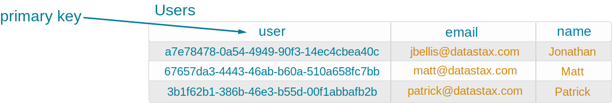
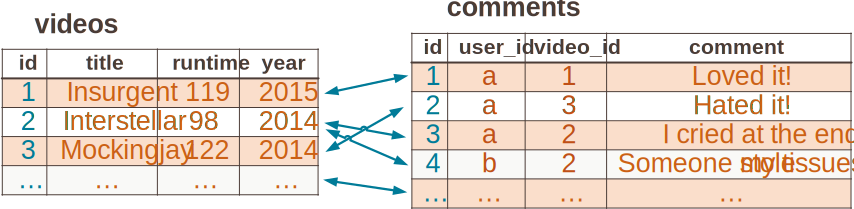
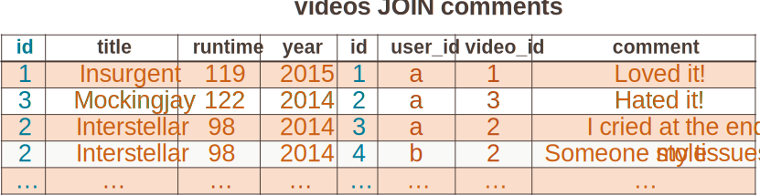
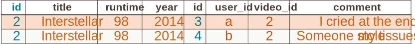
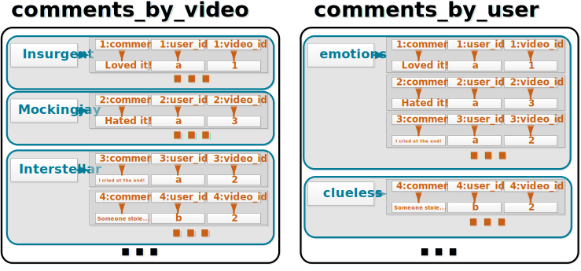

Primary Keys

CREATE TABLE users (
user uuid,
email text,
name text,
PRIMARY KEY (user)
);- Uniquely identify rows


Data modeling is a science

Data modeling is also an art
Data modeling is the process of collecting and analyzing data requirements in an information system. We identify domain objects, relationships between them, and how we query this information. This process is key to designing our database system.
Data modeling is a cross between science and art. Science is reproducible whereas art is the creative component to tackle non-standard problems. Science applies formalized patterns to common problems whereas art reproductions are not worth much. (But they make you look cool!)
Different data models can solve the needs of the domain, however some could be costlier than others because they require more notes and machines.
Lightening fast queries are the goal!

Designing a relational database schema begins with the focus on the object types, their attributes, and how that maps to tables. Queries are usually an afterthought.
Designing a Cassandra database scheme focuses early on the queries and making their speed a first priority. We structure Cassandra tables to support queries rather than represent domain object types.
Doing it right now means we scale and have consistent spped, our model could be fast now, but may not scale well and needs to be considered.
Big Data


KillrVideo is a video sharing website

Features:
Movies and TV shows
The KillrVideo domain has several features we see listed here. Most notably KillrVideo not only stores licensed content but also user-generated content as well. There are other typical video-sharing features such as parental controls, searching, and also tracking where users left off while watching a video.

KillrVideo found too much success too early and is frantically trying to keep up with its growth. Users constantly push new content, consume content, etc. The KillrVideo team needs a simple mechanism to store/retrieve this content which continues coming at a fast pace.
Relational Database Problems

Currently KillrVideo stores its data in a relational database. However, this leader/follower architecture causes a single point of failure when the database crashes.
KillrVideo also found that scaling their relational database is doable but difficult. Users on the other side of the world experience lag on the site simply because of their geographical location. Ideally the KillrVideo team could store their data in both the eastern and western hemispheres so all users can enjoy a pleasant viewing experience.
Why Cassandra

KillrVideo needs to migrate to Cassandra to solve all of these problems. Cassandra uses nodes in a peer-to-peer fashion rather than a single centralized leader/follower database. Cassandra also scales linearly with the number of nodes KillrVideo adds to the system. Cassandra is always on because when some nodes fail, the others pick up the slack. Using Cassandra, KillrVideo can easily locate its nodes geographically to the users' physical location.

SELECT comment
FROM videos JOIN comments
ON videos.id = comments.video_id
WHERE title = 'Interstellar'As is typical, we join videos with comments to retrieve each comment for a given title. The database combines each matching pair from both tables based on video id and then linearly searches that result set where the title is Interstellar. That’s a lot of work given even a handful of videos.

Notice the JOIN denormalizes the data.

After the join, the database then searches based on the WHERE clause.


CREATE TABLE comments_by_video (
video_title text,
comment_id timeuuid,
user_id text,
video_id timeuuid,
comment text,
PRIMARY KEY ((video_title), comment_id)
);
CREATE TABLE comments_by_user (
user_login text,
comment_id timeuuid,
user_id text,
video_id timeuuid,
comment text,
PRIMARY KEY ((user_login), comment_id)
);We know users want to query for comments based on a video title or a user's login, so in Cassandra we build partition structures to support these queries directly. The partition keys are video title for the first and user login for the second. Retrieving the appropriate partition is a matter of hashing the given WHERE value and then contacting the node storing that partition.
Also notice that the JOIN operations earlier denormalized the data at query time. This is an expensive operation we pre-empt in Cassandra by storing our data denormalized to begin with. Both tables store copies of comment data.

CREATE TABLE comments_by_video (
video_title text,
comment_id timeuuid,
user_id text,
video_id timeuuid,
comment text,
PRIMARY KEY ((video_title), comment_id)
);
CREATE TABLE comments_by_user (
user_login text,
comment_id timeuuid,
user_id text,
video_id timeuuid,
comment text,
PRIMARY KEY ((user_login), comment_id)
);Although Cassandra stores the data in partitions, CQL provides a convenient interface of querying table structures. Denormalize that data!
Entity Types - Relationship Types - Attribute Types

Entity - object that is involved in an information system
Entity type - set of similar objects
Relationship - relates two or more entities
Relationship type - set of similar relationships
Attribute - descriptor of an entity/relationship
Attribute type - set of similar attributes

Attributes to query on must be in the front of the primary key

| Violating this rule means that you may not be able to query on a specific column |
Rationale
Table can only be queried on columns that make up the front of a primary key, which must include all partition key columns.
The table can also be queried on all of the primary key columns.
Entity type example
title and typeAll tables support queried on title and type. However the ordering of the primary key columns can change what columns can be queried.
In 'videos_by_title_type', title and type must both be queried since they make up the primary key.
In videos_by_title, title is first and makes up the partition key, and can always be queried. type can only be queried if title is queried too.
In videos_by_type, type is first and can always be queried, and title can only be queried in addition with type.
Relationship type example
last name and first nameAll tables support querying on last_name and first_name.
In addition, all tables support querying on last_name and first_name and video_id.
videos_by_user_2 can also query on just one column: last_name.
Inequality search attributes become clustering columns
| Violating this rule means you may not be able to do a certain inequality search or range scan |
Partition key columns do not allow for inequality searches, although there is a token-based inequality search.
However, results from a token-based query are not meaningful for the commonly used partitioners.
For queries that require an inequality search but without an equality search, an arbitrary column or bucket can be created for use as a search predicate.
Rationale
Clustering columns support inequality (range) query.
Only one clustering column can be used in an inequality predicate.
Entity type example
last_name = ? and registration_date > ?In users, registration_date is a clustering column.
The primary keys are formed by columns that are queried on, last_name (equality), and registration_date (inequality).
The primary keys also include columns that correspond to the key attributes, user_id.
Relationship type example
user_id = ? and uploaded_timestamp > ?
In table videos_by_user, uploaded_timestamp is a clustering column.
How is the primary key formed?
* Equality search attributes
* Inequality search attributes
* Key attributes
Key attributes map to primary key columns
| Violating this rule may result in upsert operations—loss of data |
Rationale
Entities and relationships are uniquely identified by key attribute values.
Row in a table is uniquely identified by primary key column values.
Entity type example

Key attribute for entity type User: id.
Tables users and users_by_last_name have the column user_id that correspond to the key attribute and are part of the primary key for these tables.
Relationship type example
Key attribute for relationship posts: id.
id represents a role of Video in a relationship; a video can only participate in the relationship one time.
Tables videos_by_user and users_by_video have column video_id that corresponds to the key attribute and is part of the primary keys for these tables.
An estimate can be obtained using the following formula
Example: Comments by User — Average case
The comments_by_user table in this example is slightly different from the normal model, since it is missing the tags and type columns and has a static column user_email.
Example: Comments by User — Average case

The comments_by_user table in this example is slightly different from the normal model, since it is missing the tags and type columns and has a static column user_email.
Example: Comments by User — Average case
The comments_by_user table in this example is slightly different from the normal model, since it is missing the tags and type columns and has a static column user_email.
Example: Comments by User — Average case
The comments_by_user table in this example is slightly different from the normal model, since it is missing the tags and type columns and has a static column user_email.
Example: Comments by User — Average case
The comments_by_user table in this example is slightly different from the normal model, since it is missing the tags and type columns and has a static column user_email.
Example: Comments by User — Average case
The comments_by_user table in this example is slightly different from the normal model, since it is missing the tags and type columns and has a static column user_email.
Example: Comments by User — Bad case
Example: Comments by User — Worst case
Example: An extreme case
Example: An extreme case
Workarounds
Modify the use case
An estimate can be obtained using the following formula:
| This formula only provides an estimate for data forecasting and analysis |
Example: Comments by User
| Column Name | Size |
|---|---|
user_id |
16 bytes |
post_timestamp |
8 bytes |
video_id |
16 bytes |
user_email |
30 bytes (average) |
video_title |
60 bytes (average) |
preview_thumbnails |
32,768 bytes (average) |
comment |
300 bytes (average) |
Check out the appendix for a list of all of the CQL types and their data size.

For each regular column, take the size of the column and add the size of the clustering column(s).
Then sum the size of all of the regular column(s).
Duplication across tables

Copy of the same entity / relationship is stored in different tables
comments_by_videocomments_by_userDuplication across partitions
Duplication across rows
Copy of the same data is stored in different rows of the same partition
Inverted index lookup — efficient index-based join

An inverted index is a table that stores:
Storing the raw data again in the index table would be an expensive duplication.

Real world attributes form natural keys. They already exist, straightforward to derive, meaningful, and easy to query.
Examples of this are taxpayer identifications numbers, employee identification numbers, email address, login/username, or a composite key of name, date of birth, and address.
Convenient

The table on the left stores all interactions for a single user into one partition. The optimized table on the right divides these interactions by each video the user interacts with.
This optimization also satisfies "partition per query" design methodology for its original query:
Q10: Find the video interactions for a user with a known id and specified video id (show the most recent interactions first).

We restricted the number of folders a user may have, thus, we have small partitions.